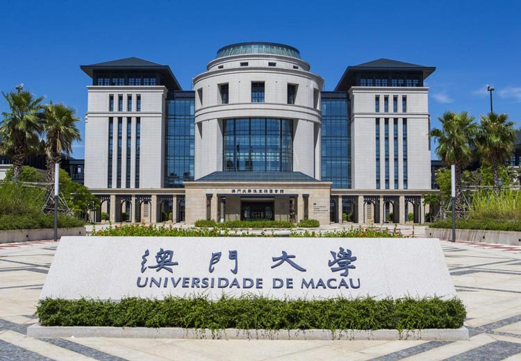

My Education

Bachelor of Computer Science, University of Macau (Aug 2020 – Jun 2024)
- Cumulative GPA: 3.70 / 4.00
- Awarded Dean’s List for 5 consecutive semesters
- Relevant Coursework: Algorithm Design & Analysis, Operating Systems, Data Structures, Database Management, Computer Networks, Machine Learning, Discrete Math, Linear Algebra, Calculus
My Work Experience
Software Engineer Intern, BOTTLE TECH LIMITED, Macao SAR, China (Oct 2023 – Jan 2024)
- Developed a robust web scraping solution, achieving a low error rate of less than 1% in data extraction with 98% data accuracy over 10,000 records daily.
- Leveraged frameworks to build RESTful APIs for standard communication.
Entrepreneur, E-commerce Store Owner, Shopee (Date Started – Present)
- Managed all aspects of the business, growing from 0 to 6-figure sales within 6 months.
- Active and familiar on platform such as Shopee and Facebook.
- Key responsible: Source products with data driven manner, create engaging visuals and copywriting, Stock management, Customer
Service, execute end to end online marketing strategy.
My Awards
- Dean's List, University of Macau, for 7 consecutive semesters.
My Services
As a budding entrepreneur and software developer, I offer freelance services in web development, e-commerce consultancy, and data analysis. Feel free to reach out for collaboration or service inquiries.